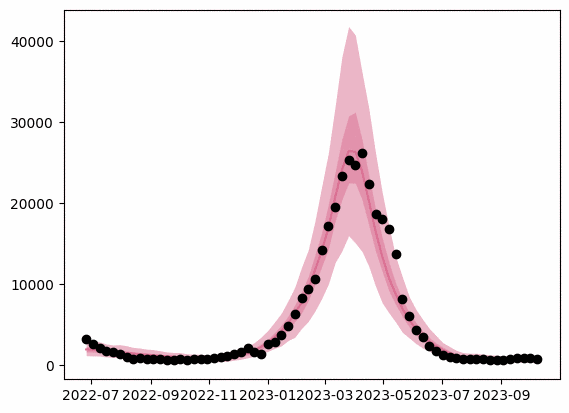

Code
handball_tracking
Player detection and tracking on handball broadcast footage, with per-frame homography projecting players onto a tactical map. Team assignment is unsupervised — SigLIP embeddings of player crops, reduced and clustered. Part of a wider sports-analytics line that also covers tennis, and graph neural networks predicting pass success from spatio-temporal data.

persona-vector-agents
Reproduction and robustness audit of persona-vector steering in game-theoretic settings. The published baseline reproduces on all six games; a deterministic scorer replaces the paid LLM judge at 95.6% agreement, which makes the whole evaluation free to run.

CoarseNet
A package implementing coarse-graining methods for networks, co-developed alongside a cross-disciplinary review comparing approaches from physics, computer science and network science on how well each preserves spectral, topological and dynamical properties.

InfraMIND Proteus
Our model for the 3rd Infodengue-Mosqlimate Dengue Challenge (2026), forecasting weekly dengue cases across Brazilian states for the 2026–27 season. Statistical models predict each outbreak's attack rate, peak week and peak size; a mechanistic renewal model, calibrated per state and year in a three-stage Bayesian workflow, turns them into weekly trajectories. With Paulo Cesar Ventura (UNICAMP) and Alberto Aleta.